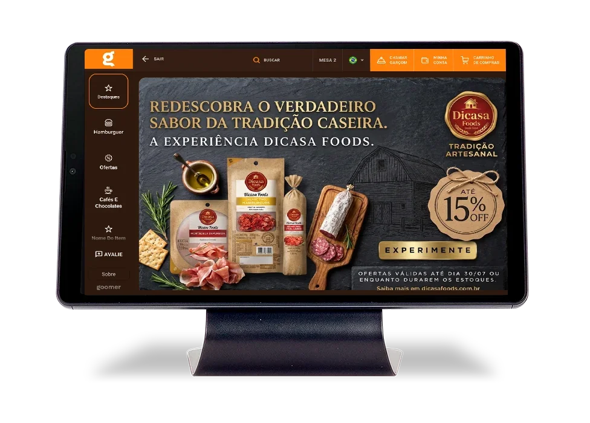

Sony Pictures · Como Roubar um Banco. Como a campanha aparece no tablet Goomer: o vídeo de 10 segundos entra na Tela de Início entre os banners do restaurante, e o jogo fica numa aba própria do cardápio.
O tablet mostra o banner do restaurante, entra o vídeo da Sony e depois a tela volta para o material do restaurante.

A Sony ganha uma aba no cardápio. Ao tocar, o cliente entra no assalto e joga ali mesmo, na mesa. Toque na tela do tablet para testar.
Simulação para apresentação. Restaurante, pratos e preços são ilustrativos (restaurante padrão Goomer).